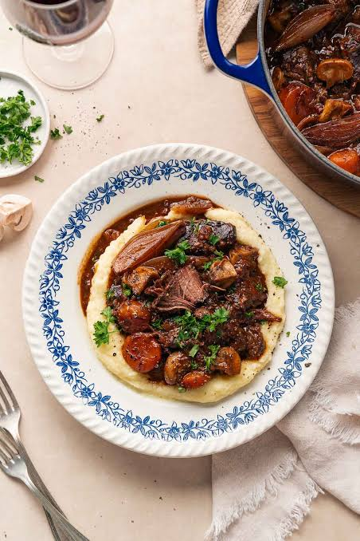

bœuf à la Bourguignonne

Description
Bœuf à la Bourguignonne, often simply called beef Bourguignon, is a classic French beef stew. It features
fork-tender beef braised in a rich red wine sauce—traditionally from the Burgundy region—and is slow-cooked with
smoky bacon, garlic, herbs, carrots, pearl onions, and earthy mushrooms
Ingredients
- Beef Lean Meat .5kg
- Bacon
- Onion
- Carrot
- Garlic 4 cloves or up to preference
- Sol de Chile Merlot(White) preferably
- Potatoes 4
- Butter
- Beef stock
- Rosemary Herb
- Shiitake Mushroom
Steps
- Cut your beef into large \(4\text{ cm}\) cubes. Pat them completely dry with a paper towel. Season generously
with salt and black pepper.
- Dice Bacon into small strips (lardons)
- Chop onions, slice the carrots into thick rounds, crush the 5 garliccloves, and slice the shiitake mushrooms
- Peel and quarter the 4 potatoes, then submerge them in cold water so they do not turn brown
- Render the bacon
- Sear the Beef 2-3min each side
- Saute the aromatics
- Deglaze with wine
- Braise low and slow
- Pour in beef stock
- Tuck in rosemary sprigs
- Tight lid and simemr gently for 1.5-2 hours.
- For the potatoes, Boil them in salted water for 15-20 minutes until tender
- Mash with butter
- Plate the beef over the mashed potatoes
Home